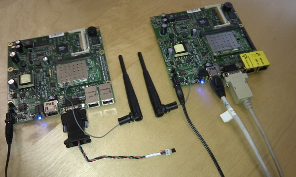

e-mail addresses: forename.surname@stud.sbg.ac.at
The project goal is to build a distributed temperature measurement System based on Linux including real time aspects
Hardware: Mikrotik Routerboard 532A
OS: Openwrt Embedded Linux
Sensor: Digitemp Temperatursensor

Presentation: RBTemp_Presentation.pdf
Report: RBTemp_Report.pdf
Source: RBTemp_Source.zip